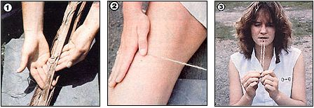

Making Natural Cordage
When you're caught in a bind - or at the end of your rope - this skill could come in handy.
By Tom Brown, Jr. and Brandt Morgan
January/February 1983
Cordage - that is, thread, string or rope - is all but indispensable in a survival situation. It can be used for (among other things) bowstrings, fishing lines, trap triggers, snares and lashings. Most people would likely despair if forced to make their own rope or string. However, the materials needed to do so are plentiful in most places (you'll find a list of possible options accompanying this article), and the techniques required are actually quite simple to master.
Sources
Just about any strong, flexible fiber can be used to produce good cordage. The dried inner bark of most trees, for example, will supply you with workable raw material. It's best to look for trees with dead bark, and strip off long sections of the fibrous cambium layer between the wood and the outer bark. If you're in a true survival situation, you can even strip sections of the inner bark from living trees (it'll be easiest to do in the spring, when the sap is running) and dry them. Be sure, though, to take only a few thin strips from any one trunk (don't cut all the way around it, doing so can kill the tree). Should you have trouble separating the inner from the outer bark, just soak the strips in warm or boiling water until the fibers come apart easily.
The dried inner skin of the stalks of fibrous plants will also serve your purpose, as will fibrous leaves and even dried grasses (see the accompanying list below). When working with pithy plants, such as dogbane and milkweed, you may be able to strip the material you need from the stalk in long ribbons. If the plant is dry, though, you'd be better advised to crush and open up the stalk. Then break off short sections of the woody core, leaving a long ribbon of fibers in your hand. If you come across a supply of non-pithy plants, such as nettles and rushes, the best way to remove the fibers is by placing a dried stalk on a piece of wood and pounding it with a rounded rock. (Don't use a sharp instrument, as it could cut the fibers.) The material from annual plants will, of course, be shorter than that gathered from trees, but by splicing the fibers together, you can still make cordage of almost any length or thickness.
Animal sinew can be used to produce exceptionally strong rope or twine. In fact, a strand of it no thicker than carpet thread can hold the weight of an average man. Because of its strength, sinew is especially good for making bowstrings, fishing lines, snares, wrappings and threads. Another useful property of sinew is that, when wetted with saliva before wrapping, it shrinks and dries as hard as glue. As a result, knotting the ends of a sinew wrapping is sometimes unnecessary. (Rawhide is very strong, too, and also shrinks as it dries.)
The longest sinew is found in the white cords that run along either side of an animal's backbone, but you can get usable lengths from the tendons and ligaments attached to muscles and bones, as well. Simply cut out the sinew, remove its protective sheath, and clean and dry it. (When dry, it'll be very hard and brittle.) To separate the individual fibers, pound each strand with a rock, as you would for plant stalks, then put it in hot water.
Wrapping for Strength
Once you have a supply of raw material, you'll have to decide how thick and long your finished cordage will have to be. If all you need is a piece of wilderness dental floss or a trap trigger, you might get by with only a few fibers. In most cases, though, you'll want something stronger - and strength is primarily the result of wrapping fibers together. This will likely require that you break down the original material a little more than you have to this point.
If you're working with a ribbon of bark or leaf material, roll it between your palms (for better friction, dampen your skin) or against the leg of your pants to separate the fibers. Work along the entire length of the strip until you've gotten rid of any nonfibrous matter and have a long, thin bundle of "threads."
The Simple Wrap
To do a fast wrapping job (which will serve in many situations where strength isn't of primary concern), hold onto the ends of the fibers and roll the whole bundle against your pants leg in one direction. By making repeated strokes along the entire length, you should be able to twist the fibers into a strand of makeshift cordage that's many times the strength of the original strands of material. Then, to secure the twist, take the middle of the strand in your teeth (make sure, of course, that it's from a nonpoisonous plant!) and bring the two ends together. When you let go with your teeth, the doubled cord will twist around itself naturally.
The Reverse Wrap
For a much tighter and stronger wrap, start by twisting the fiber bundle in the middle until it kinks; then hold the kink between the thumb and index finger of one hand. With the fingers of the second hand, twist the bottom strand toward you and wrap it once around the other. Now, hold this wrap with the first hand, twist the new bottom strand toward you and wrap it around the other. Continue the process along the entire length of your cord. If you need only a short section, tie a knot at the end of the double-wrapped piece and use it as is.
How to Splice
In order to make a long rope or string, you can simply splice together as many shorter pieces as necessary in the following way: First, twist and kink the bundle so that one end is twice as long as the other. (This will eliminate the chance of producing parallel splices that would seriously weaken the cordage.) Then, using the reverse technique, wrap to within an inch or two of the short end. Next, separate the fibers of the short end with your fingers (so they spread out like a broom). Now, attach a second bundle of equal thickness by spreading and fitting its fiber ends into those of the first bundle. (To keep a uniform thickness in the cord, cut out half of the fibers in each bunch before pushing them together.)
Continue twisting and wrapping as before, taking care not to pull the strands apart. When you come to the end of the original long strand, add a third piece - and so on. (Do make sure that you never have two splices in the same place - a splice must always be wrapped with a solid strand.)
Double Strength
When a situation demands an especially strong length of cordage, you might logically think that all you need to do is begin with bigger fiber bundles. This isn't always the case, however. Strength is produced just as much by twisting and wrapping as it is by thickness. You can, of course, simply twist and double a strand you've already wrapped. The Plains Indians often made bowstrings by splicing sinew strands to about four times the necessary length, then twisting and doubling them twice.
For cordage of even greater strength and thickness, however, take a pair of reverse-wrapped strands and join them with another series of reverse wraps. Through the use of repeated splicing and doubling, you can make rope of almost any length and thickness you might need. In fact, it's often hard to believe that a finished length of cordage was made from frail material that once broke easily in your hands.
Finishing Techniques
After all the wrapping and splicing is done, there will probably be a lot of unsightly fibers sticking out along your length of cordage. To get rid of these (if you feel the need), run the piece quickly through a flame, and they'll burn off without damaging the main fibers.
Then, to keep the ends from fraying, either weave them back into the twisted cord, secure them with simple overhand knots, lash them to the tool or material you're working with, or "whip" the ends by wrapping and tying them off with thinner cordage.
More Than a Rope
Finally, don't wait until you're stuck in a wilderness situation to practice these techniques. You'll find that learning to shape natural materials into usable items isn't merely survival insurance; it's really a way of reclaiming a bit of our lost heritage. Such skills connect us with the countless generations of humans who have lived before, and they help to remind us that - beneath the trappings of civilization - we, too, are creatures of this Earth.
Sources of Cordage Materials
As noted, the inner bark of most trees and parts of many different plants and animals can be used in emergency situations to make thread, twine or rope. The following, however, are some of the top choices:
Trees | Stalks | |||
| basswood | genus Tilia | stinging nettle | genus Urtica | |
| elm | genus Ulmus | velvet leaf | Abutilon Theophrasti Medic | |
| walnut | genus Juglans | dogbane | genus Apocynum | |
| cherry | genus Prunus | milkweed | genus Asclepias | |
| cedar | genus Cedrus | fireweed | Epilobium angustifolium | |
| aspen | genus Populus | hemp | genus Cannabis | |
| maple | genus Acer | evening primrose | genus Oenothera | |
| cottonwood | Populus deltoides | |||
| hickory | genus Carya | Leaves | ||
| oak | genus Quercus | yucca | genus Yucca | |
| ash | genus Fraxinus | cattail | genus Typha | |
| bulrush | genus Scirpus | |||
| Rootlets | ||||
| Cedar | genus Cedrus | Miscellaneous | ||
| pine | genus Pinus | sweet grass | Glycerua septentrionalis | |
| juniper | genus Juniperus | greenbriar | genus Smilax | |
| tamarack | Larix laricina | cordgrass | genus Spartina | |
| yucca | genus Yucca | hair (moose, horse, etc.) | ||
| spruce | genus Picea | sinew | ||
| sage | genus Salvia | rawhide | ||
Tom Brown, Jr, was brought up in the ways of the woods by a displaced Apache named Stalking Wolf. Today, he is one of our country's leading outdoor experts, author of The Tracker and The Search, and head of one of the largest tracking and wilderness survival schools in the United States. Click here to find Tom's "At Home in the Wilderness" article series.
|
 TOM BROWN One good source of natural cordage is bark from dead trees. Find more images and complete instructions for making natural cordage in the Image Gallery. |
TOM BROWN [1] One of the good source of natural cordage is the bark from dead trees. Just strip off long sections of the fibrous cambium layer between the wood and the outer bark, and wrap them together. [2] In order to break down this material a little more, damper your skin and roll the fibers between your palms or against your leg. [3] You can make a simple wrap by twisting the fibers into a strand. Then - to secure the twist - take the middle in your teeth and bring the two end together. When you let go, the strand will twist around itself naturally. |
 TOM BROWN [4] For a reverse wrap, twist the fiber bundle in the middle until it kinks. [5] Now, bring the bottom strand toward you. . . [6] and wrap it once around the second strand. [7] Then do the same with the second strand, wrapping it around the first, and keep repeating this procedure. [8] When knotted on the end to keep it from unraveling, the result will be strong cordage that you can use like machine-made rope or twine. |